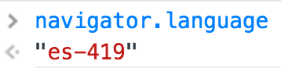

Trying to get this blog to adapt to user's language I struck with a couple of issues:
- Ghost, the blogging platform that I'm using doesn't have a way to create and use translations.
- I can't detect on backend because this blog is on github pages.
That means the only way is to use javascript to detect user's language and localize.
Luckly Mozilla faced this issue so they create the webl10n proyect and the way to use it is really simple:
- You have to create a locales.ini file, where you're going to indicate all the languages that you want to detect and the path to files where translations are located.
@import url(es/app.properties)
[en]
@import url(en/app.properties)
- Then create translation files, in this case app.properties, inside you need to write the phrase id and translation.
read-more = Leer más
share-it = ¿Te gusto el artículo? Compartelo.
- You've to add the library and the locales.ini file to page.
<link rel="resource" type="application/l10n" href="locales/locales.ini">
<script type="text/javascript" src="js/l10n.js">
- Finally add phrase id to html using "data-l10n-id" attribute.
<h4 data-l10n-id="share-it">Liked this post ? Share it.</h4>
If you want more info about this library you can check the github repo or you can also check the MDN page about localizing webapps.
But even if this library is easy to use It doesn't mean is free of issues:
If user has javascript disabled (something really odd) or using No Script translations would not work, that's why you should write by default in a language that almost everybody can understand(english).
If you have a html element in the middle of a phrase like a link, webl10n is just going to replace text before link.
In order to translate link text you have to add a different phrase id, the same applies to text after link where you also need to wrap it with a html tag.
<p data-l10n-id="first">First part of text <a href="http://lcamacho.github.io" data-l10n-id="link">link to my blog</a> <span data-l10n-id="second"> text after link</span></p>
The es-419 case
With translations ready the last step was testing and It works on most browsers, the only two that came as suprise were Chrome and the new Opera that now is based on Chromium.
Both were showing english version instead of spanish even though I were using them in spanish, so to be sure about browser language I executed in console navigator.language just to see what returns.

That was akward to me because browsers like Firefox returns "es-AR" (language id - country id), but then I found on IANA that "es-419" is the id for latin american spanish something like a neutral spanish for latam (if such thing really exists, let's remember how hard it is to speak spanish).
To make webl10n work with this language you need to add a couple of lines to locales.ini, first [es-419] and then the line to indicate the path to spanish translation file, but to avoid this I sended a pull request to allow webl10n to recognize language ids that contains numbers and redirect to base language, like in this case to be redirected to [es] translations.